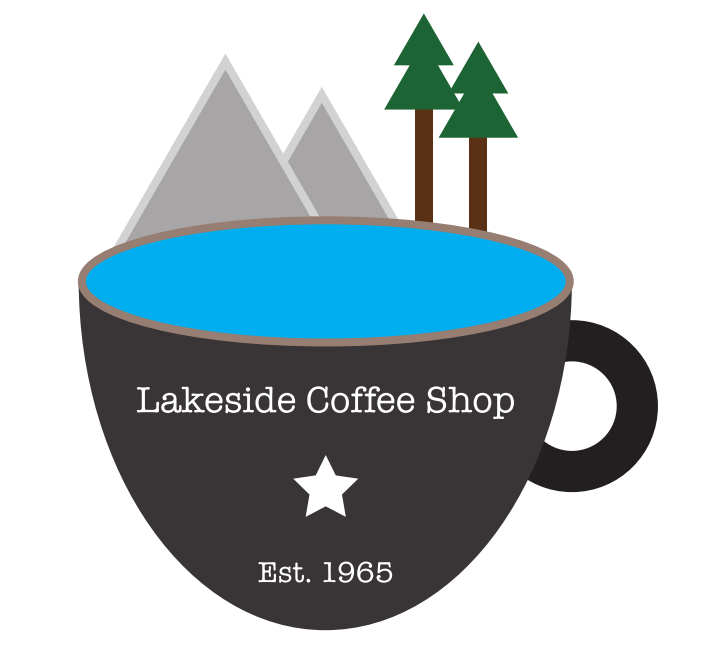
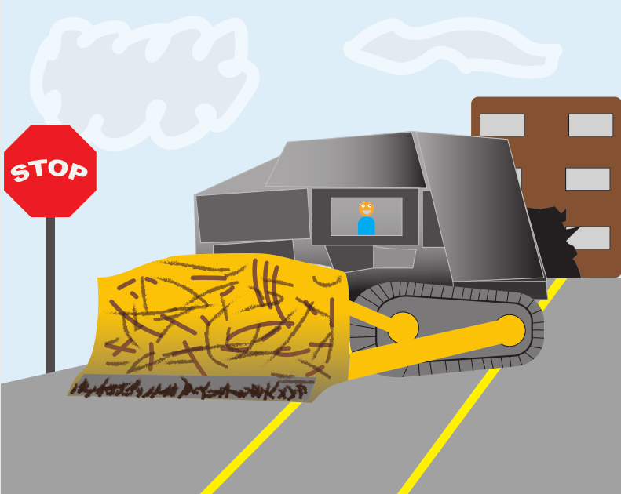
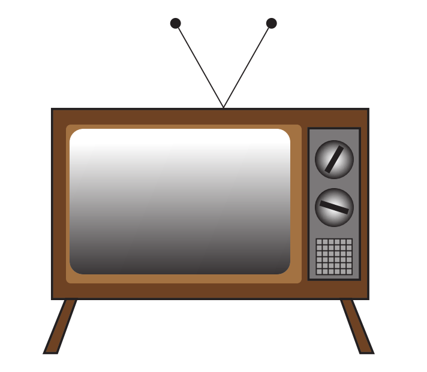

Illustrator Unit
The third unit. Illustrator is a vector graphics editor. It can be used for creating beautiful, scalable designs, from logos to promotional art. Unlike the raster-based Photoshop, Illustrator deals exclusively in geometric vectors and shapes, making it a lot easier and more straightforward to use. Throughout this unit, I learned to create complex designs with Illustrator's wide selection of tools and effects. Illustrator's easiness, combined with the large amount of open-ended projects that it contained, made this unit my favorite.
My custom business logo. The objective of the assignment was to create a logo that employed themes associated with a non-existent business of my choice. I went through many iterations before settling on the final design.
In this assignment, we were supposed to create an original vehicle scene, with the vehicle, character, and background drawn entirely in Illustrator. I initially intended on doing the B-29 bomber plane, but it's kinda tough to draw detailed planes with nothing more than ovals and lines, so I went with a more rectangular vehicle: the killdozer. Even then, it took me days to make the treads look half-normal. The image I traced can be seen here.
{kind=link}
One of the unit's tutorial assignments. I recreated three designs: a pencil, a caterpillar, and a car. The last challenge was an old-timey television, with the catch that we had to find our own TV to recreate. The one I made incorporated features from various student examples, including the screen's gradient, the angled feet, and the speaker grill.
Frosty the Snowman! This was one of those projects were I just followed the instructional video. Notice how nearly the entire image was created from basic geometric shapes. I think the point was to show how far Illustrator's simple tools can take you.